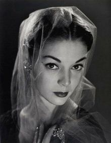

Jean Ward Patchett Auer (February 16, 1926[3]– January 22, 2002) was a leading fashion model of the late 1940s, 1950s, and early 1960s. She was among the best known models of that era, which included Dovima, Dorian Leigh, Suzy Parker, Evelyn Tripp and Lisa Fonssagrives. Patchett was the subject of two of Vogue Magazine's most famous covers, both shot in 1950 by Erwin Blumenfeld and Irving Penn. She was famous for being one of the first high-fashion models to appear remote; previously, models had appeared warm and friendly. Irving Penn described her as "a young American goddess in Paris couture".During her career, she appeared on over 40 magazine covers. Patchett modeled for brands including Bergdorf Goodman, Henri Bendel and Revlon.
Bookstore17_PhotoBox
위치: 서울 서초구 방배중앙로 107-2, 1층
웹사이트: www.bookstore17.com
블로그: blog.naver.com/booksore17
인스타: www.instagram.com/bookstore17_photobox/